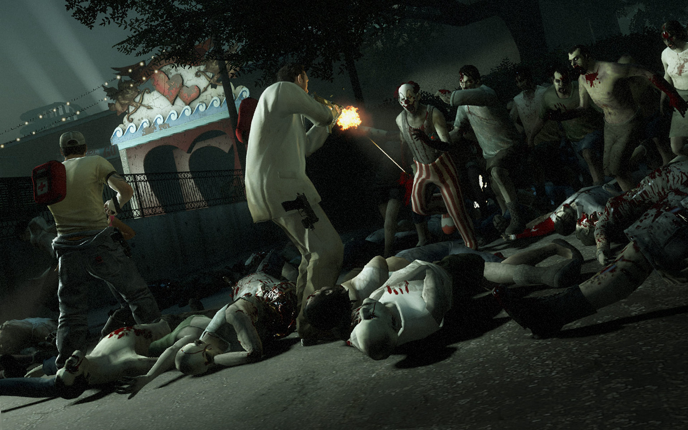

Left 4 Dead 2 é a continuação do popular jogo de tiro em primeira pessoa, baseado em ação cooperativa, desenvolvido pela Valve. O cenário pós-apocalíptico do primeiro jogo retorna, mas com novas locações e personagens. Numa época não muito distante da atual, um vírus misterioso se espalha rapidamente entre os humanos, transformando-os em zumbis psicóticos com sede de sangue. Entretanto alguns sobreviventes lutam para se manter vivo no meio de todo esse caos.